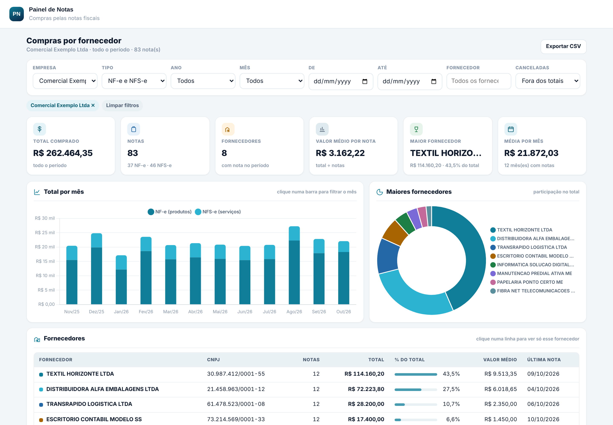
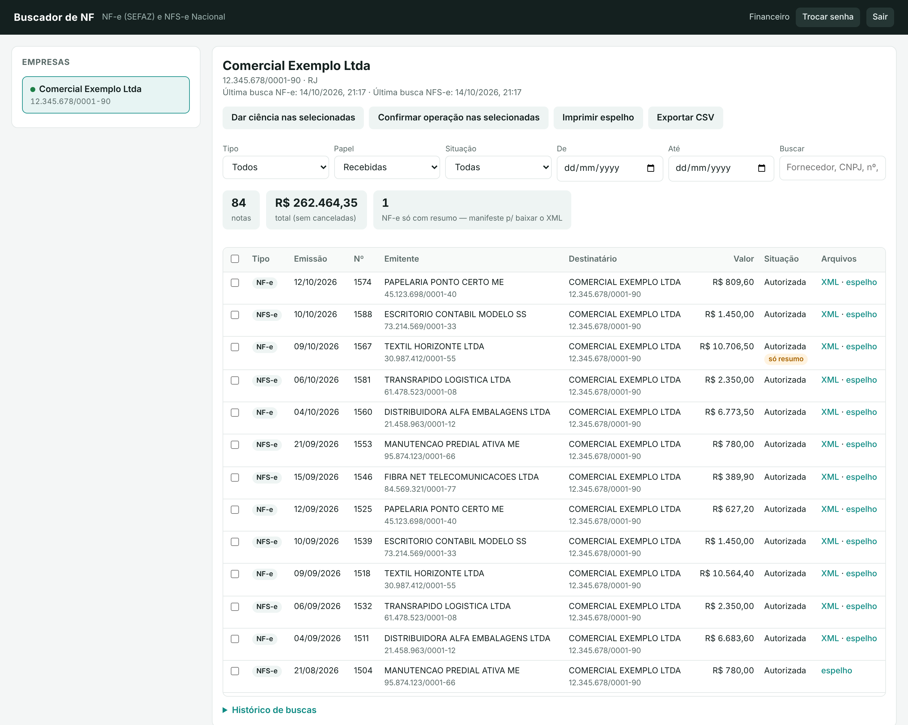
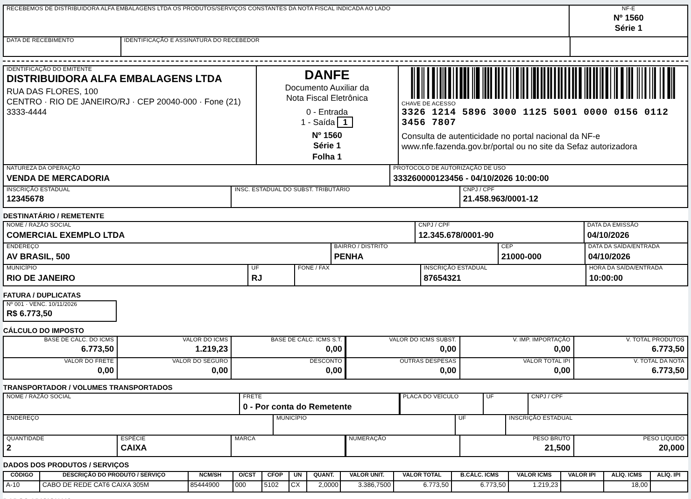
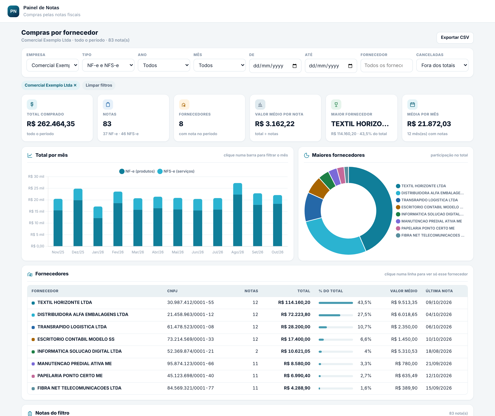

Aplicativos da Plataforma Nervia para empresas que querem ter todas as notas de compra à mão, sem correr atrás de fornecedor, e saber para onde vai o dinheiro.
Toda empresa recebe notas de vários fornecedores, por caminhos diferentes. Sem um lugar que reúna tudo, o controle depende da memória de alguém.
O fornecedor esquece de mandar. O financeiro cobra por e-mail, WhatsApp e portal, um por um.
A NF-e fica disponível para download no Ambiente Nacional por cerca de 90 dias. Depois disso, só pedindo de novo ao fornecedor.
O contador pede os arquivos do mês e alguém precisa garimpar caixas de e-mail para juntar tudo.
Uma nota emitida contra o seu CNPJ sem você saber só aparece quando já virou problema.
O boleto é pago, mas a nota correspondente nunca foi vista, impressa ou arquivada.
Quanto a empresa gasta com cada fornecedor, mês a mês? Só montando planilha à mão.

Tela real do aplicativo, com empresa e fornecedores fictícios.
A nota chega sozinha. A partir daí, cada área usa do jeito que precisa:
Antes de pagar o boleto, abra a nota: valor, vencimento da fatura, produtos e impostos. Se algo estiver errado, você vê antes do dinheiro sair.
Filtre o período, exporte a lista para Excel e baixe os XMLs. O contador recebe tudo de uma vez.
Espelho no formato do DANFE e do DANFSe, montado a partir do XML autorizado. Selecione várias notas e imprima, uma por folha.

Espelho gerado pelo aplicativo a partir de uma nota fictícia.

Tela real do aplicativo, com dados fictícios. O Painel usa as notas reunidas pelo Buscador de NF.
| Sem os aplicativos | Com a Plataforma Nervia | |
|---|---|---|
| Conseguir o XML | Pedir ao fornecedor, nota por nota | Chega sozinho, de hora em hora |
| Prazo de ~90 dias da NF-e | Passou do prazo, perdeu o download | Guardada logo depois de emitida, sem prazo para você |
| Fechamento com o contador | Juntar anexos de vários e-mails | Filtra o mês, exporta e envia |
| Nota estranha contra o CNPJ | Descoberta tarde, se for descoberta | Aparece na lista junto com as outras |
| Imprimir uma nota | Procurar o PDF que o fornecedor mandou | Espelho em um clique, várias de uma vez |
| Gasto por fornecedor | Planilha montada à mão | Painel pronto, mês a mês, com comparação |
É o custo de um ano do Buscador de NF. Uma única nota que se perde ou passa sem conferência (uma cobrança indevida paga, um crédito de imposto não aproveitado, uma multa por documento que faltou) pode custar mais do que isso.
Para buscar as notas, o sistema usa o certificado digital A1 da sua empresa. Por isso a guarda e o uso dele seguem regras claras, por escrito.
O certificado fica num cofre de segredos, em servidores na região de São Paulo.
A senha do certificado e o arquivo original são usados só no cadastro, para validar.
O certificado serve para buscar as notas. Não emite nota, não assina documentos e não acessa e-CAC nem bancos.
Termo de autorização e custódia do certificado, com usos permitidos, proibidos e regras da LGPD. Sem termo, o certificado não é cadastrado.
O acesso é por usuário e por CNPJ. Quem não foi liberado não vê nenhuma nota.
Acesso pela Área do Cliente em nervia.com.br, no computador ou no celular, com um login só para todos os aplicativos.
Mensalidade por aplicativo. Comece pelo Buscador e acrescente o Painel quando quiser.
A Nervia cadastra a empresa e você assina o termo de custódia do certificado.
Você envia o certificado digital A1 do CNPJ. A Nervia valida e guarda com segurança.
Você recebe o login da Área do Cliente e as notas começam a chegar já na primeira busca.